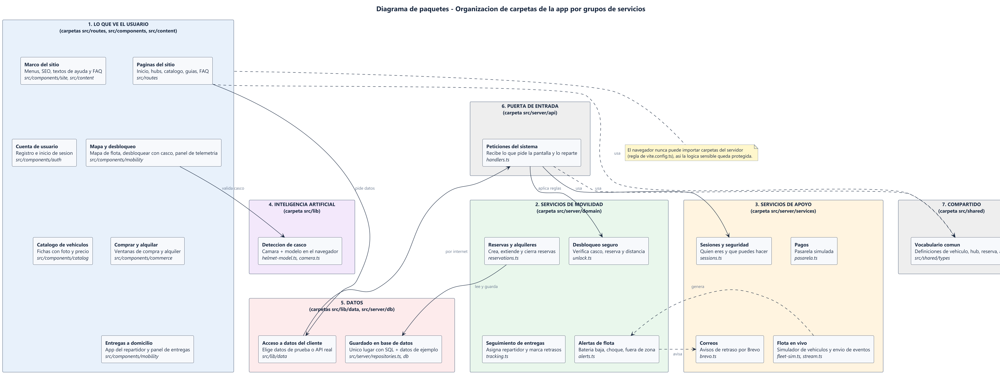
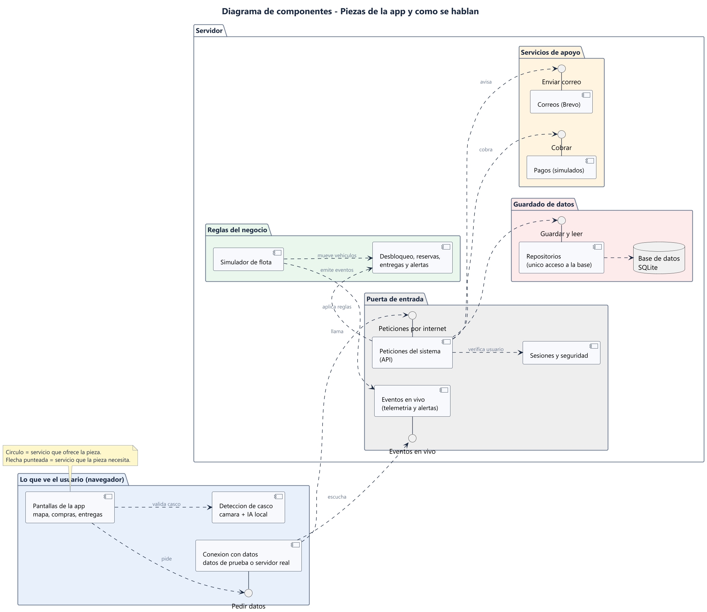
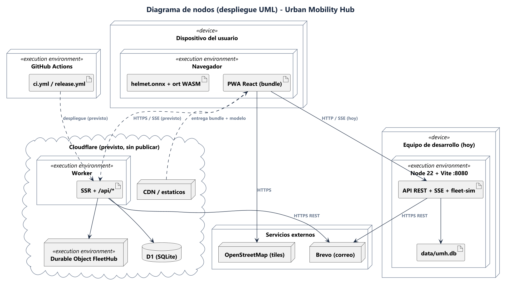

Investigación aplicada al proyecto Urban Mobility Hub
Ingeniería de Software II — UNAB
José Alejandro Téllez Prada
Jaime Alejandro Vega Barboza
Santiago Gonzalez Nigrinis
Octubre de 2026
Es un diagrama estructural de UML que organiza los elementos de un modelo (clases, módulos, subsistemas) en paquetes y muestra las dependencias entre ellos. Sirve para ver la arquitectura por capas de un sistema mediano o grande y para controlar el acoplamiento. Cada paquete es un espacio de nombres y los paquetes pueden anidarse.
| Símbolo | Significado |
|---|---|
| Rectángulo con pestaña superior (carpeta) | Paquete; el nombre va en la pestaña o dentro. |
| Paquete dentro de paquete | Anidamiento / jerarquía. |
| Flecha punteada | Dependencia: si el destino cambia, el origen puede verse afectado. |
| «import» | El paquete origen incorpora los elementos públicos del destino a su espacio de nombres. |
| «access» | El origen usa elementos del destino sin incorporarlos (acceso privado). |
| «merge» | Se fusiona el contenido del destino en el origen (usado en metamodelado). |
Diagrama estructural que describe el sistema como un conjunto de componentes (unidades modulares, reemplazables, que encapsulan su implementación) y las interfaces mediante las que se relacionan. Muestra qué ofrece y qué necesita cada pieza.
| Símbolo | Significado |
|---|---|
| Rectángulo con icono de componente o «component» | Componente. |
| Círculo unido por línea (“lollipop”) | Interfaz provista: lo que el componente ofrece. |
| Semicírculo (“socket”) o flecha punteada hacia la interfaz | Interfaz requerida: lo que el componente necesita. |
| Lollipop encajado en socket | Conector de ensamblado entre dos componentes. |
| Cuadrito sobre el borde | Puerto: punto de interacción con interfaces propias. |
| Flecha punteada | Dependencia entre componentes. |
Diagrama que modela la arquitectura física: qué hardware o entornos de ejecución existen (nodos), qué artefactos de software se instalan en cada uno y cómo se comunican.
| Símbolo | Significado |
|---|---|
| Cubo 3D | Nodo (recurso computacional). |
| «device» | Nodo de hardware (equipo, celular, servidor físico). |
| «execution environment» | Entorno de ejecución sobre un nodo (navegador, Node, contenedor). |
| Rectángulo con esquina doblada / «artifact» | Artefacto desplegado (ejecutable, bundle, archivo de base de datos). |
| Línea entre nodos (con etiqueta) | Ruta de comunicación (HTTP, HTTPS, SSE). |
| Nodos anidados | Un nodo contiene a otro (dispositivo → navegador → artefacto). |
En Urban Mobility Hub (micromovilidad con mapa en vivo, gemelos digitales y detección de casco con IA) los usamos así; las fuentes están en entregables/diseno/src/ (PlantUML) y se contrastaron con el código de src/.
Separamos routes, components (mobility, auth, commerce, catalog, site, ui), lib (DataSource, api-client, modelo ONNX), shared/types y el servidor (api → services/domain → repositories → db). Nos permitió comprobar que el cliente nunca importa código de server/ (la regla importProtection de Vite lo impide) y que las reglas de negocio puras viven en domain.

Modelamos la SPA React, el DataSource (adaptador mock o API), la API REST, el stream SSE, el simulador de flota, las reglas de dominio, los repositorios sobre SQLite, el modelo de casco y los servicios externos (pasarela simulada, Brevo). Las interfaces (IDataSource, IPago, IEmail, IRepositorio) muestran qué piezas se pueden sustituir sin tocar el resto, por ejemplo cambiar la pasarela simulada por una real.

Hoy el sistema corre en un único equipo (Node 22 + Vite en el puerto 8080 + archivo SQLite) y el navegador del usuario ejecuta la PWA y el modelo helmet.onnx con WebAssembly. Lo previsto, aún sin publicar, es Cloudflare (Worker, D1, Durable Object, CDN). El diagrama distingue lo real de lo previsto y añade CI (GitHub Actions) y servicios externos (Brevo, OpenStreetMap).

Verificación previa: antes de documentar corrimos typecheck, 82 pruebas unitarias/integración y 19 pruebas e2e en navegador (Playwright, escritorio y móvil), todas en verde (1 omitida por ser solo-móvil).
Nota: se intentó abrir también uml-diagrams.org, pero el sitio no pudo verificarse desde la herramienta (error de certificado), por eso no se cita como consultada.
| Fuente | ¿Por qué la eligió? | ¿Qué aporta? | ¿Es confiable? |
|---|---|---|---|
| 1. Visual Paradigm | Aparece primera al buscar “diagrama de paquetes UML”; explica con lenguaje claro. | Definición, notación del paquete y dependencias «import»/«access», reglas de nombres y anidamiento. | Sí, con matices: es una empresa de herramientas UML con guías reconocidas, pero comercial; por eso se contrastó con el estándar. |
| 2. PlantUML | Es la herramienta con la que dibujamos los diagramas del proyecto. | Sintaxis y elementos disponibles: node, artifact, cloud, database, component, anidamiento y enlaces. | Sí: es la documentación oficial de la herramienta; no define la semántica UML, solo cómo dibujarla. |
| 3. OMG UML 2.5.1 | Es el estándar que define UML; sirve para validar lo que dicen las demás fuentes. | Referencia normativa de los tres tipos de diagrama (estructura: paquetes, componentes; despliegue). | Sí, máxima confiabilidad (fuente primaria), aunque es densa y poco didáctica; en la página consultada solo se confirmó la existencia de la especificación. |
| 4. Claude (IA) | Rapidez y contexto: leyó el código real del repositorio. | Borrador de estereotipos y símbolos, y mapeo entre módulos reales y los diagramas. | Parcial: puede equivocarse; por eso su contenido se contrastó con las fuentes 1–3 y con el código. |
Borrador para que el equipo lo ajuste a lo que realmente hizo.
Borrador honesto; edítenlo con sus propias palabras.
¿Qué aprendí que no sabía antes? Que los tres diagramas responden a preguntas distintas: paquetes (¿cómo se organiza y quién depende de quién?), componentes (¿qué ofrece y qué necesita cada pieza?) y nodos (¿dónde corre físicamente?). También que «import» y «access» no son lo mismo, y que conviene separar en el despliegue lo real de lo previsto.
¿Qué dificultad tuve? Mantener los diagramas fieles al código: había documentos antiguos que hablaban de MQTT/aedes cuando el sistema real usa un simulador y SSE. También ajustar la sintaxis de PlantUML para que los paquetes y las interfaces se vieran legibles.
¿Qué estrategia me funcionó mejor? Combinar una fuente didáctica con el estándar y verificar todo contra el código y las pruebas automáticas antes de documentar.